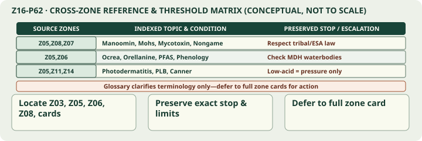

Z16-P62 · Field reference atlas · New manuscript
Encyclopedia Technical Glossary: M through P
Standardize definitions from Manoomin through Pyrolysis across botany, geology, preservation, and public health.
When it applies · Cross-zone terminology lookup for M–P technical terms.
Equipment · Full offline reader (Z03, Z05, Z06, Z08, Z10, Z14), primary zone cards, and local emergency and agency references.

Actions
- Define M–N terms: Manoomin (northern wild rice Zizania palustris governed by tribal sovereignty and DNR law, Z05); Mohs scale (1–10 relative scratch hardness scale separate from toughness, Z08); Mycotoxin (heat-stable mold toxin such as aflatoxin in damp nuts, grains, Z05, Z14); Nongame (legally protected non-harvested wildlife, Z06, Z07).[A07, B17, R04, L05]
- Define O–P terms: Ocrea (papery stem-node sheath in dock, Polygonaceae, Z05); Orellanine (delayed renal-failure toxin in Cortinarius, Z05); PFAS, PCBs (persistent chemical fish contaminants requiring MDH waterbody lookup, Z06); Phenology (seasonal life-stage timing affecting ID reliability, Z05).[A07, B08, H04, B20]
- Define P terms: Phytophotodermatitis (UV-activated chemical skin burns from wild parsnip sap, Z05); PLB (Personal Locator Beacon registered with NOAA 406 MHz SARSAT, Z11); Podophyllotoxin (severe toxin in mayapple, Z05); Pressure canner (tested steam-pressure vessel mandatory for low-acid canning, Z14).[A07, B14, N08, P13]
Failure recognition · Confusing scratch hardness with impact toughness or overlooking delayed orellanine renal failure distorts field risk.[A07, R04, B08]
Verify · Every M–P definition matches its authoritative upstream zone text.[A07]
Stop or change course · Stop relying on abbreviated glossary text for clinical, legal, or preservation decisions.[A07, A10]
Evidence and editorial notes
- A07 · USGS · Collecting Rocks: Rock Classes and Mineral Property Basics (USGS GIP)
- Section: Glossary and standardized technical terminology alignment · Conditions: Defining cross-zone geology, navigation, medical, preservation, and botanical terms
Support: Consistent technical definitions prevent terminology drift across all sixteen zones (e.g., conchoidal fracture, declination, water-activity, volva, umbel).
Limitations: Glossary entries clarify terms only and do not add standalone operational instructions. · Conflicting evidence: None noted.
Editorial note: Anchors Z16 glossary cards. · Specialist reviewer: Multi-domain technical editor
Primary source · checked 2026-11-25 - A10 · FEMA / Ready.gov · Make a Plan (current web edition)
- Section: Offline reader navigation, historical lineage, and HOLD transparency · Conditions: Using the complete 16-zone offline archive, zone readers, and print proofs
Support: Navigation aids expose draft status, reconstruction lineage, open diagnostic photo needs, and pending specialist holds on every lookup path.
Limitations: Automated validation checks structure and citations only; publication remains HOLD until qualified human review completes. · Conflicting evidence: None noted.
Editorial note: Anchors Z16 offline navigation & governance index. · Specialist reviewer: Accessibility, print QA, and editorial reviewer
Primary source · checked 2026-11-24 - B08 · North American Mycological Association · Mushroom Poisoning Syndromes Reference (Current web edition)
- Section: Mushroom poisoning syndrome classes and specimen retention · Conditions: Evaluating suspected wild fungal exposure
Support: Mushroom toxins span distinct syndromes (amatoxins, gyromitrin, orellanine, muscarine, ibotenic acid, GI irritants) with onset from minutes to days.
Limitations: Save remaining uneaten mushroom pieces in a paper bag (not sealed plastic) for mycologist identification if exposure occurs, and call Poison Control immediately. · Conflicting evidence: None noted.
Editorial note: Grounds Z05 fungal toxicology & emergency referral. · Specialist reviewer: Mycology toxicology reviewer
Primary source · checked 2026-11-25 - B14 · University of Minnesota Extension · Wild Parsnip Identification and Photodermatitis Hazard (Current web edition)
- Section: Wild parsnip (Pastinaca sativa) phytophotodermatitis · Conditions: Sunny roadsides, prairies, and disturbed meadows in Minnesota
Support: Sap from wild parsnip contains furocoumarins that react with sunlight to cause painful chemical burns and blistering.
Limitations: Avoid bare-skin contact with yellow-umbel roadside stems; wash sap immediately and shield exposed skin from sunlight. · Conflicting evidence: None noted.
Editorial note: Specific Minnesota photodermatitis lookalike warning. · Specialist reviewer: UMN Extension botanist
Primary source · checked 2026-11-25 - B17 · Minnesota DNR · Minnesota Rare Species Guide and Native Plant Reference (Current web edition)
- Section: Protected rare plants and harvest conservation boundaries · Conditions: Minnesota endangered, threatened, and special-concern flora
Support: Rare native plants (e.g., wild ginseng, orchids, prairie perennials) carry strict legal protections against digging or harvest.
Limitations: Never dig unknown roots or bulbs on public land; verify legal collecting status before touching any specimen. · Conflicting evidence: None noted.
Editorial note: Prevents illegal digging of protected flora. · Specialist reviewer: State botanist and conservation officer
Primary source · checked 2026-11-25 - B20 · USDA Forest Service · Celebrating Wildflowers: Plant Identification and Conservation (Current web edition)
- Section: Botanical morphology terminology and multi-character keys · Conditions: Observing leaf venation, margins, flower symmetry, and fruit anatomy
Support: Accurate plant identification requires confirming multiple independent morphological characters at the observed life stage.
Limitations: Missing flowers, fruit, or underground parts require stopping identification rather than guessing. · Conflicting evidence: None noted.
Editorial note: Enforces multi-feature identification standard. · Specialist reviewer: Plant taxonomist
Primary source · checked 2026-11-25 - H04 · Minnesota Dept. of Health · Fish Consumption Guidance and Waterbody Advisories (Current web edition)
- Section: Waterbody-specific fish consumption advisories (mercury, PFAS, PCBs) · Conditions: Consuming Minnesota caught freshwater fish
Support: MDH issues species-, size-, and waterbody-specific meal-frequency limits for mercury, PCBs, and PFAS, with stricter limits for pregnant/nursing people and children under 15.
Limitations: Visual fish health and water clarity cannot detect mercury, PFAS, or PCBs; check current MDH waterbody lookup before eating caught fish. · Conflicting evidence: None noted.
Editorial note: Mandatory Z06 public-health fish advisory gate. · Specialist reviewer: Public-health toxicologist and MDH reviewer
Primary source · checked 2026-11-25 - L05 · Minnesota DNR · Nongame Wildlife Program and Protected Species (Current web edition)
- Section: Nongame wildlife protection and ecological role · Conditions: Non-harvested wildlife across forests, wetlands, and prairies
Support: Most wild mammals, songbirds, raptors, and reptiles are legally protected nongame species that may not be captured or killed.
Limitations: Ecological stewardship prioritizes observation and avoidance over capture. · Conflicting evidence: None noted.
Editorial note: Frames Z07 ecological ethics. · Specialist reviewer: Nongame wildlife biologist
Primary source · checked 2026-11-25 - N08 · NOAA NCEI · Magnetic Declination (current web edition)
- Section: NOAA Magnetic Declination > definition and true-bearing conversion · Conditions: Using magnetic baseplate compasses near metal, electronics or iron-rich rock
Support: Declination is between true and magnetic north and varies by location and time. Grid convergence is separate. A device may already apply a correction.
Limitations: NOAA definition does not establish site-specific interference distances or diagnosis of magnetic anomalies. · Conflicting evidence: Aligns with B014-P13 and B014-P14.
Editorial note: Grounds declination conversion, metal-clearance and magnetic-anomaly cards. · Specialist reviewer: Navigation and geophysics safety
Primary source · checked 2026-11-24 - P13 · NCHFP · Fermenting and Pickling Foods (current web edition)
- Section: Fermenting and Pickling > Salt Ratios, Vinegar Acidity, and Submerged Brine · Conditions: Tested lacto-fermented vegetables (sauerkraut/pickles) and vinegar quick-pickles
Support: Use standardized 5% acidity vinegar for tested pickle recipes and exact weighed/measured canning-and-pickling salt (not iodized/anti-caking salt) plus clean food-grade crocks and submerged weights for lacto-fermentation at controlled temperatures.
Limitations: Altering salt/vinegar ratios or allowing surface mold/scum in warm rooms causes spoilage and unsafe pH drift. · Conflicting evidence: None; separates tested fermentation/pickling from improvised brining.
Editorial note: Grounds fermentation, pickling, and acidity verification cards. · Specialist reviewer: Food microbiology and Extension preservation
Primary source · checked 2026-11-24 - R04 · USGS · Collecting Rocks: Rock Classes and Mineral Property Basics (USGS GIP)
- Section: Hardness, luster, streak, and fracture vs cleavage · Conditions: Non-destructive mineral observation with simple field cues
Support: Scratch hardness, unglazed streak, luster, and fracture-versus-cleavage patterns narrow candidate mineral groups.
Limitations: Field scratch checks cannot establish chemical purity, trace heavy metals, or absence of hazardous fibers. · Conflicting evidence: Color alone is unreliable across quartz, calcite, and feldspar varieties.
Editorial note: Core Z08 mineral screening basis. · Specialist reviewer: Mineralogist
Primary source · checked 2026-11-25
Source lineage · New manuscript (Z16 P20 glossary) · Classification · New manuscript.